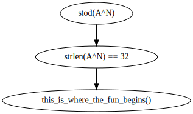

machinas's 'Twiddling'
So the author provides a hint which is that this crackme somehow relates to 'bit twiddling', or working with bits.
The author has just riddled this binary with function calls of various taunting names. I wasn't having
the best of luck finding the success function, so I decided to just start understanding the code from
the beginning. What is rather interesting however, is that the author implemented a parser, albeit a simple
one, but a parser rather than just asking for the flag in a commandline argument. So far so good with the
data flow of the program.
(gdb) x $rdi
0x7fffffffde10: 102 'f'
(gdb) x $rdi+1
0x7fffffffde11: 108 'l'
(gdb) x $rdi+2
0x7fffffffde12: 97 'a'
This is the data that would be read by the stod() function call to follow. the stod function would
then read the user input itself, shown following
(gdb) x $rdi+1
0x7fffffffde11: 65 'A'
(gdb) x $rdi+2
0x7fffffffde12: 65 'A'
(gdb) x $rdi+3
0x7fffffffde13: 65 'A'
(gdb) x $rdi+4
0x7fffffffde14: 10 '\n'
So far as I can tell, all stod() does is read the string. After the call to strlen(), the program
compares the string length with 0x20=32, presumably for the benefit of the bit twiddling routines to come?
So the string definitely needs to be 31 characters long excluding newline. this_is_where_the_fun_begins()
then starts off with a far jump. From here ive_never_been_stung_by_a_wasp() is called with the first
character of the user supplied string. ive_never_been_stung_by_a_wasp() is called several times
throughout the program, so I thought it might be helpful to observe its various return values to see if any
pattern arises.
| function |
call # |
return value |
input string |
| ive_never_been_stung_by_a_wasp() |
1 |
0000000000000000000000000100001000000000000000000000000001000010 |
BBBBBBBBBBBBBBBBBBBBBBBBBBBBBBB |
| ive_never_been_stung_by_a_wasp() |
2 |
0000000000000000000000000100001000000000000000000000000001000010 |
BBBBBBBBBBBBBBBBBBBBBBBBBBBBBBB |
| ive_never_been_stung_by_a_wasp() |
3 |
0000000000000000000000000100001000000000000000000000000001000010 |
BBBBBBBBBBBBBBBBBBBBBBBBBBBBBBB |
So I'm not quite sure what to think of that, I know the return value is in rax, and I was under the impression
that that is what remain after a function call, so if it does any work, it would remain on the stack.
you_turn_my_world_around() is called with the same bit string as in the table above.
Now as far as the actual success string, it is printed by the first printf(), and the failure string,
by the second printf(), I may experiment putting this information in a graph because its becoming
quite complex.

After founding the register where the comparison to the victory code path is done, I noticed that its
bit string value does not vary at all when the flag input is random strings. In addition this value
is set within the this_is_where_the_fun_begins() function and only incremented a few times after that.
This indicated that the algorithm to generate this bit string is exact, and done fully within the
this_is_where_the_fun_begins() function.
...
I really need to get some sort of system for doing this, solving these things is beginning to become a function
of debugging them enough times to where I have some mental map of what is going on, until I can piece it together,
After enough frustration I decided to read a writeup on this, and that my mistake is trying to decompile
assembly code myself, the code itself was quite simple, but it felt like a labrynth of complexity, to get
absolutely anywhere in this business, you need a decompiler, lesson learned.